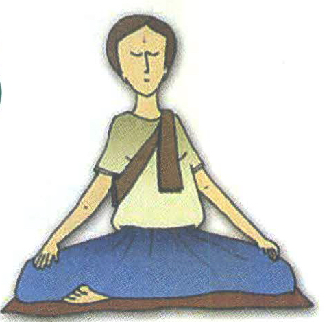
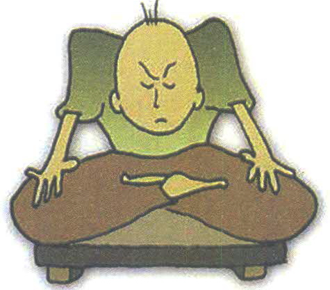
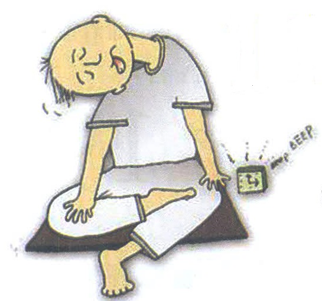
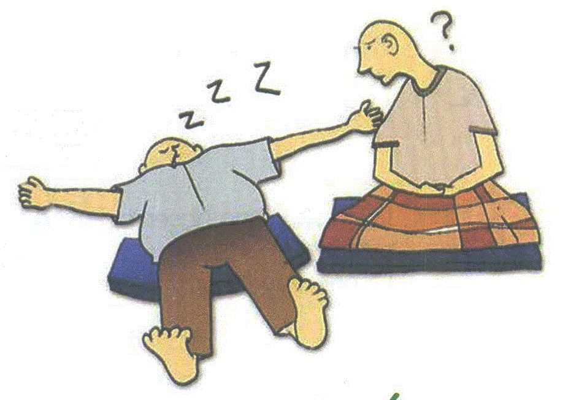
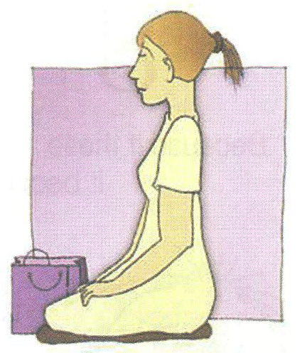
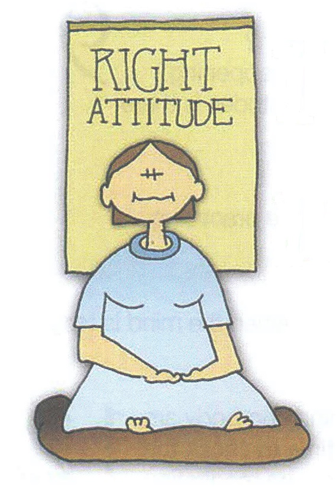
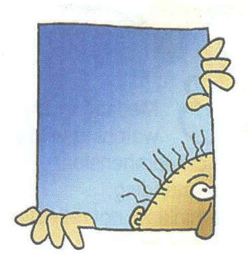
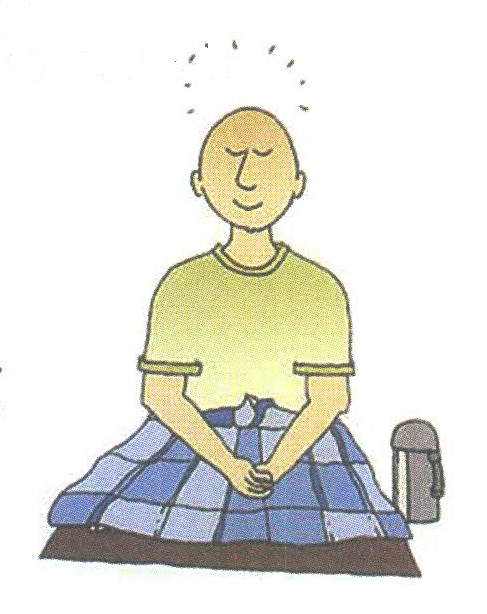

緬甸, 西亞多 史歐明禪師 著（Sayadaw Shwe Oo Min）；
烏 德旃尼亞(U. Tejaniya) 英譯；葉文可 漢譯
正確的態度是禪修時最重要的一件事：
|
１＊ 當你修行時：不要過於努力專注， 不要去控制， 不要企圖製造任何事物， 不要強迫或限制自己。 |
|
|
２
＊ 不要企圖製造任何事物， 但也不要拒絕當下正在發生的事。 然而，當事情發生或停止發生時，不要忘記它們， 要對它們保持覺知。 |
|
|
３
＊ 企圖製造某件事是貪(lobha)， 拒絕正在發生的事是嗔(dosa)， 不清楚某件事正在發生 或停止發生是痴(moha)。 |
|
| ４ ＊ 只有當觀照的心沒有貪、 嗔、 或煩惱／焦慮(soka)時， 寧靜（直觀）的心才會升起。 | |
| ＊ 你必須反覆檢查自己修行時的態度。 ５ |  |
| ６ ＊ 你必須同時接納並觀察好與壞的經驗。 | |
|
７
＊ 你只想要好的經驗， 你連最微小的不愉悅經驗都不想要， 這是否公平？ 這是正法之道嗎？ |
|
|
８
＊ 不要有任何期望， 不要渴求任何事物， 不要焦躁不安， 因為，如果你的心中有這些態度時， 你將很難修行。 |
 |
| ９
＊ 你修行時為何這麼努力的專注？ 你是否想獲得什麼東西？ 你是否期望什麼事情發生？ 還是期望什麼事停止發生？ 很可能你存著這其中一種的心態。 |
|
|
１０
＊ 如果你的心逐漸感到疲倦， 你的修練方式一定有些錯誤。 |
|
|  | １１ ＊ 當你內心緊繃時， 你不能修練。 |
| １２
＊ 如果你的身和心漸漸感到疲倦， 這是你應該檢查自己修行方式的時候了。 |
|
|
１３
＊ 修行是以覺知和領悟（或理解）的心來 等待和觀察， 不是思惟，不是回想， 不是批判。 |
 |
|
＊ 不要抱著想要得到某物 或希望某事發生的心態來修行。 這唯一的效果是將使你自己疲累。 |
１４ |
| １５ ＊ 修行時，你的心應該是輕鬆與平靜的。 |  |
| ＊ 你的身和心都應該感到舒適。１６ | |
|  | １７
＊ 一顆輕鬆自在的心，使你得到良好的修行。 你擁有正確的態度嗎？ |
| １８
＊ 修行就是： 不論發生任何事，好事或壞事， 接受它，放輕鬆， 並且觀察它。 |
|
| １９
＊ 你的心正在做什麼？ 思惟？還是保持覺知？ |
|
| ２０
＊ 你的心現在何處？ 在你自身裡面？ 還是外面？ |
 |
| ２１
＊ 這顆觀看／觀察的心 是否有正確的覺知？ 還是只有膚淺的覺知？ |
|
|
＊ 你並非試著將事情轉變為， 自己期望的狀態； 你是嘗試去了解當下發生的實相。 |
２２ |
| ２３
＊ 不要被自己的意念煩擾， 你修練的並不是要停止思惟， 你修練的是： 每當意念生起時，你要覺察並且接納它。 |
|
| ２４
＊ 你不應該排斥觀照的對象 （正在發生或正被覺知的現象／事物）， 你應該知道並覺察因所緣境而生起的雜念， 如此這般地消除它們(煩惱)。 |
 |
| ２５
＊只有當你有信念/信心(Saddha)時，精進(Viriya)才會生起。 只有當你有精進時，正念(Sati)才會持續不斷。 只有當正念能持續不斷時，定(Samadhi)才會成就。 只有當定成就時，你才會了解到事物的實相。 當你開始了解事物的實相時，你的信心會因此而更加增強。 |
|
| ２６
＊ 只要將注意力放在當下， 不要追憶過去！ 不要計劃未來！ |
|
| ２７ |
＊ 觀照的對象並不重要， 在幕後運作的那個心－－從事於覺知，也就是說，那個觀察的心－－是比較重要的。 如果你抱著正確的態度來觀察，你所觀照的對象就是正確的對象。 |